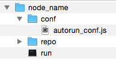

Startup
COHORTE system is composed of several Nodes. Only one node is specified to be Top Composer. It manages the components distribution among the available participating nodes.
In this chapter, we will detail how to create and start COHORTE nodes using simple command lines.
Creating nodes
To create a COHORTE node, use the provided cohorte-create-node command.
Usage
$ ./cohorte-create-node [-h] [-n NODE_NAME] [-a APP_NAME]Options
This command has the following options :
-h, --help show this help message and exit
-n NODE_NAME, --node NODE_NAME
Name of the node
-a APP_NAME, --app-name APP_NAME
application's symbolic name
Results
This command will create a directory containing the following structure:

- node_name correspond to the provided name by the user using the
--nodeoption. - run is the starting script. It will be detail in the next section (Starting nodes)
- repo is a directory where user provided bundles should be placed.
- conf is a directory containing configuration files. Only one configuration file is created initially (autorun_conf.js), other files are generated by
runscript in this location.
Here is the content of the generated conf/autorun_conf.jsfile. You should add component descriptions on the indicated zone.
{
"name": "default-application",
"root": {
"name": "default-application-composition",
"components": [
/* your component descriptions here */
]
}
}Only the node started as Top Composer (see next section) should have this configuration file completed. Other nodes started as simple nodes will ignore this file.
Starting nodes
To start a COHORTE node, you have to use the generated run command (this command calls cohorte-start-node internal command).
Usage
$ ./run [-h] [-a APPLICATION_ID] [--use-config CONFIG_FILE]
[--update-config] [--show-config]
[-b BASE_ABSOLUTE_PATH] [-n NODE_NAME]
[--top-composer]
[--web-admin WEB_ADMIN_PORT]
[--shell-admin SHELL_ADMIN_PORT]
[--transport TRANSPORT_MODES]
[--xmpp-server XMPP_SERVER]
[--xmpp-port XMPP_PORT] [--xmpp-jid XMPP_JID]
[--xmpp-password XMPP_PASSWORD]Options
There are different kind of options depending on the use of the actual node.
Mandatory options
-a APPLICATION_ID, --app-id APPLICATION_ID
Application's ID
All the nodes participating for a given application should have the same application-id.
Startup configuration options
--use-config CONFIG_FILE Configuration file to use for starting cohorte node.
By default the run.js file is used if available
--update-config Update startup configuration file with provided
options
--show-config Show startup configuration file content
-b BASE_ABSOLUTE_PATH, --base BASE_ABSOLUTE_PATH
absolute file path of the node's directory
We can write the startup configurations in a separate JSON file (see How to use startup configuration files section). This options will simplify the command options list and allows sharing the same startup configurations between several nodes.
Information about the node to start
-n NODE_NAME, --node NODE_NAME
Node name
--top-composer Flag indicating that this node is a Top Composer
--web-admin WEB_ADMIN_PORT
Node web admin port
--shell-admin SHELL_ADMIN_PORT
Node remote shell port
We can provide a different node name than the already provided when the node is created (by using –node option). One important option of cohorte nodes is the --is-top-composer. If set, the node will be considered as a Top Composer (manages all the distribution of components among the available nodes). Users can also provide customised informations such as the http port to use for the web-admin component (see monitoring chapter), or the port to use for the remote shell admin component.
Information about the transport protocols to use
--transport TRANSPORT_MODES
Transport mode (http and/or xmpp - seperated by comma)
--xmpp-server XMPP_SERVER
XMPP server
--xmpp-port XMPP_PORT
XMPP server port
--xmpp-jid XMPP_JID XMPP jid
--xmpp-password XMPP_PASSWORD
XMPP Room
The --transport option allow the use to choose which transport protocol to use between the actual node and the other nodes participating in the same application. You can provide a common seperated list of the supported protocols (http and xmpp for the moment). Each protocol need additional configuration options that should be provided seperataly using dedicated options (–xmpp-server for instance to mention the XMPP server to use).
How to use startup configuration files
To avoid re-typing the same options each time a node is started, or to share the same configuration between several nodes, you can provide a startup configuration file which contains such startup configurations. The content of such file is described hereafter.
run.js
{
"application-id": "ABCDEF",
"node": {
"name": "node-rasp",
"top-composer": true,
"web-admin": 9001,
"shell-admin": 9001
},
"transport": ["xmpp"],
"transport-xmpp": {
"xmpp-server": "charmanson.isandlatech.com",
"xmpp-port": 5222,
"xmpp-jid": "bot@charmanson.isandlatech.com"
}
}- To show the content of the startup configuration file :
$ ./run --show-config- To use other configuration file than the default run.js file :
$ ./run --use-config other_run_conf.js- Update the startup configuration using command options (–some-configuration should be replaced with a supported options list):
$ ./run --some-configurations --update-configThis will update all the provided options within the startup configuration file. You can use also this option to create the default run.js file with a set of configuration options.
Other advanced startup configurations
The following configuration files (located on $COHORTE_HOME/conf folder) are used by COHORTE for the initial configuration of the different internal components. You can override them by creating a file with the same name in your $COHORTE_BASE/conf folder.
Boot configuration files
| File | Bundles & Components |
|---|---|
| boot-common.js | Pelix, iPOPO, Shell |
| boot-common-py.js | Pelix Remote Services, Cohorte Signals |
Python Isolates configuration files
| File | Bundles & Components |
|---|---|
| python-common-http.js | HTTP Server |
Java Isolates configuration files
| File | Bundles & Components |
|---|---|
| java-common.js | iPOJO, Shell, Cohorte PyBoot, Isolate Base & Utilities |
| java-common-http.js | HTTP Server |
| java-common-remote.js | Cohorte Remote Services |
| java-common-ui.js | Cohorte UI Admin |
Previous Next